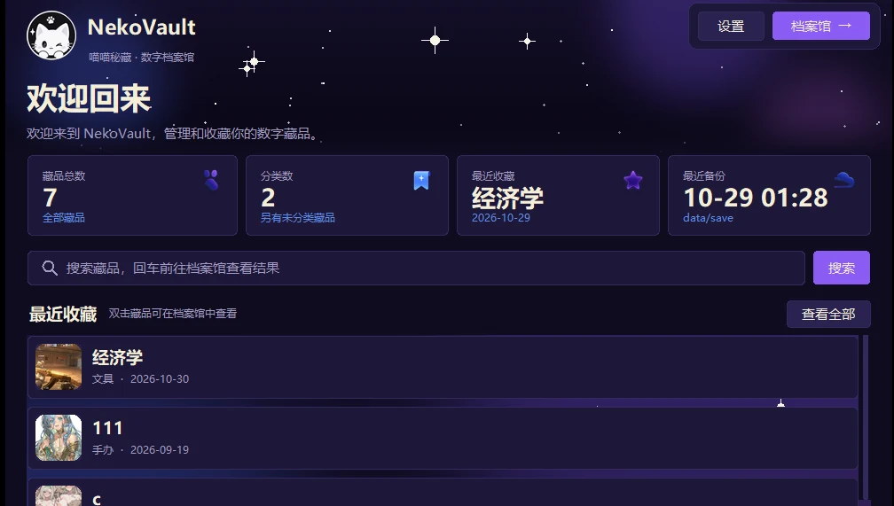
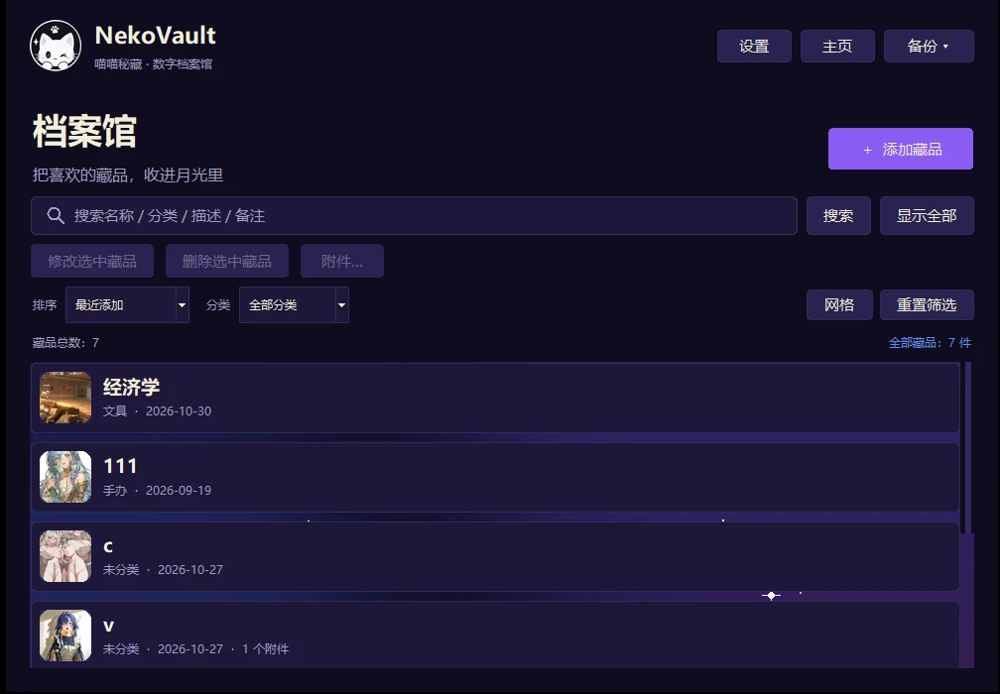

PROJECT 03 — COLLECTION
喵喵秘藏 NEKOVAULT
给手办、卡牌、海报做的本地藏品柜：拍照、归档、加锁、导出，不联网也能用。

它做什么
一件藏品一张卡片：名称、分类、入手日期、描述、备注、封面，附件可以放多张图或票据。列表和网格两种看法，搜得到，也筛得动。
支持快照备份、zip 导入导出、单件导出成 .nvault 加密包、回收站保留 7 天、生成 PDF 目录册。主题有夜色紫、夏天海边和跟随系统三套。

怎么做的
界面用 Tkinter 自绘，刻意做成深紫色的夜：月亮、星星、柔和的卡片阴影。数据全部落在本地，不上传、不登录。
单件加密包用 AES-256-GCM，密钥由 scrypt 从口令派生；打包时把图片和元数据一起封进去，换台机器也能打开。程序崩溃会写日志，下次启动提示你。
收藏这件事，不该被某个平台的停服决定。
踩过的坑
- 中文文件名进 zip 容易乱码，要显式指定编码，并在导入时兼容两种老写法。
- PDF 目录册要嵌入中文字体，否则在别人的电脑上会变成方块。
- 深色主题下图片容易「发光」，边框和背景要一起调，不能只调文字。
- 回收站要真的能还原，不能只是把记录藏起来。
主题指南单独写在 docs/THEME_GUIDE.md 里，方便以后加第三套、第四套配色。